Research Intern · Remote
Shanghai Artificial Intelligence Laboratory
I am a Ph.D. student at the Multimedia Laboratory (MMLab), The Chinese University of Hong Kong, co-supervised by Prof. Wanli Ouyang and Prof. Xiangyu Yue.
Before joining CUHK, I was a research assistant in the Department of Computer Science and Technology at Tsinghua University, working with Prof. Wenwu Zhu, Prof. Zhi Wang, and Prof. Yuan Meng. I received my Master's degree in Computer Technology from Tsinghua University, advised by Prof. Zhi Wang, and received Tsinghua University's Distinguished Master's Thesis Award.
I study and build efficient AI systems that can understand and generate complex data across various modalities, with a particular focus on scientific data.
Research, publications, and community activities.
We are organizing the UniWorld workshop on universal representations for perception, reasoning, and world modeling at ECCV 2026.
One paper was accepted to ICML 2026.
Four papers were accepted to CVPR 2026.
One paper was accepted to ICLR 2026.
We released a technical report on a scientific reasoning LLM, featured on Hugging Face Daily Papers, and a comprehensive survey of scientific LLMs, available in this repository.
One paper was accepted to NeurIPS 2025.
One paper was accepted to IEEE TPAMI.
Two papers were accepted to ACM Multimedia 2025.
Two papers were accepted to ICCV 2025 and IEEE TMM, respectively.
Two papers were accepted to IEEE TVCG and ICME 2025, respectively.
Three papers were accepted to CVPR 2025.
Two papers were accepted to IEEE TMC and AAAI 2025, respectively.
One paper was accepted to ECCV 2024.
Two papers were accepted to CVPR 2024 and the ICLR 2024 PML4LRS Workshop, respectively.
Three papers were accepted to ICCV 2023, ECML-PKDD 2023, and ACM Multimedia 2023, respectively.
I received my Master's degree and the Distinguished Master's Thesis Award.
* Equal contribution
# Corresponding author
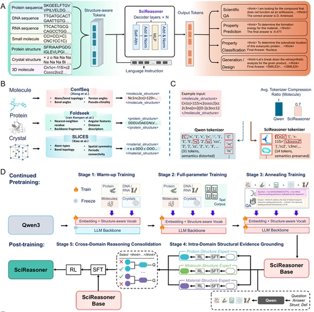
Accurate, Interdisciplinary and Transparent Structure-property Understanding with Deep Native Structural Reasoning
Preprint, 2026
[PDF]
[Project]
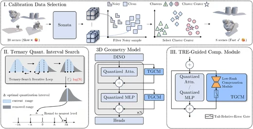
Tail-Aware Post-Training Quantization for 3D Geometry Models
Preprint, 2026
[PDF]
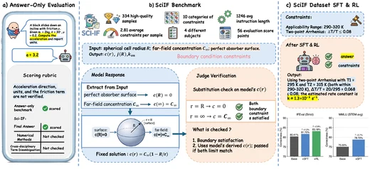
SciIF: Benchmarking Scientific Instruction Following Towards Rigorous Scientific Intelligence
Preprint, 2026
[PDF]
[Code]
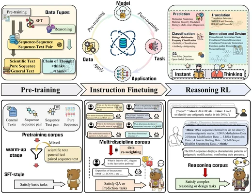
SciReasoner: Laying the Scientific Language Ground across Disciplines
Technical report, 2025
[PDF]
[Model & Data]
[Code]
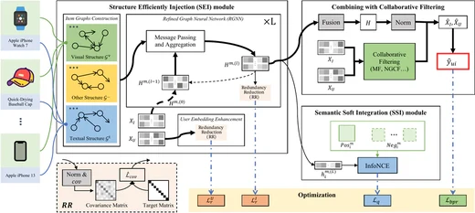
Breaking the Curse of Knowledge: Towards Effective Multimodal Recommendation using Knowledge Soft Integration
[IEEE TMM] IEEE Transactions on Multimedia, 2025
[PDF]
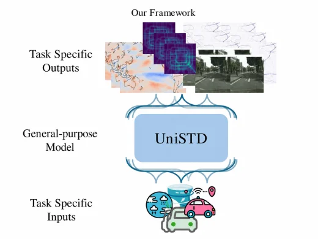
UniSTD: Towards Unified Spatio-Temporal Prediction across Diverse Disciplines
[CVPR'25] IEEE Conference on Computer Vision and Pattern Recognition, 2025
[PDF]
[Code]
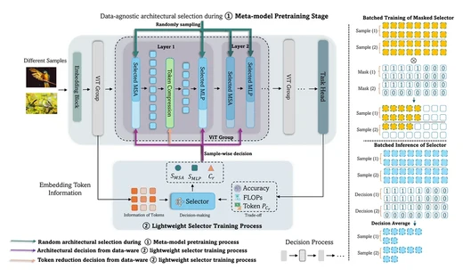
PRANCE: Joint Token-Optimization and Structural Channel-Pruning for Adaptive ViT Inference
[IEEE TPAMI] IEEE Transactions on Pattern Analysis and Machine Intelligence, 2024
[PDF]
[Code]
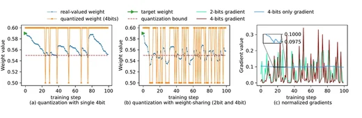
RFQuant: Retraining-free Model Quantization via One-Shot Weight-Coupling Learning
[CVPR'24] IEEE Conference on Computer Vision and Pattern Recognition, 2024
[PDF]
[Supp]
[Poster]
[Code]
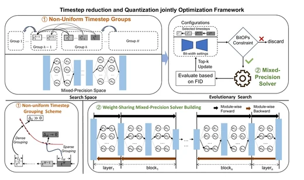
TMPQ-DM: Joint Timestep Reduction and Quantization Precision
Selection for Efficient Diffusion Models
Preprint, 2024
[PDF]
[Project]
[Code]
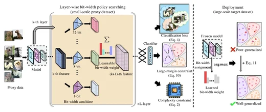
SEAM: Searching Transferable Mixed-Precision Quantization Policy through Large Margin Regularization
[ACM MM'23] ACM International Conference on Multimedia, 2023
[PDF]
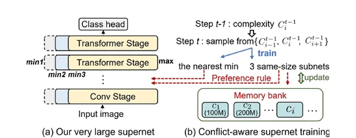
ElasticViT: Conflict-aware Supernet Training for Deploying Fast Vision Transformer on Diverse Mobile Devices
[ICCV'23] International Conference on Computer Vision, 2023
[PDF]
[Supp]
[Poster]
[Code]
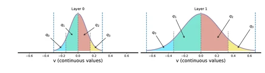
Mixed-Precision Network Quantization via Learned Layer-wise Importance
[ECCV'22] European Conference on Computer Vision, 2022
[PDF]
[Supp]
[Project]
[Poster]
[Code]
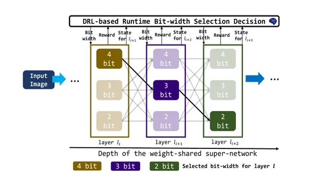
Arbitrary Bit-width Network: A Joint Layer-Wise Quantization and Adaptive Inference
Approach
[ACM MM'22] ACM International Conference on Multimedia, 2022
[PDF]
Shanghai Artificial Intelligence Laboratory
Department of Computer Science and Technology, Tsinghua University
Institute for AI Industry Research, Tsinghua University
Microsoft Research Asia
CVPR (2023–2026), ECCV (2022, 2024, 2026), ICCV (2025), ACM Multimedia (2024–2026), AAAI (2024), ICLR (2024–2026), NeurIPS (2023–2025), ICML (2025–2026), and ECAI (2023); Neural Networks, TMLR, and IEEE Transactions on Big Data.
UniWorld — Universal Representations for Perception, Reasoning, and World Modeling, ECCV 2026.
Member of the IEEE C/DC 3161 Working Group on IEEE Digital Retina Systems.